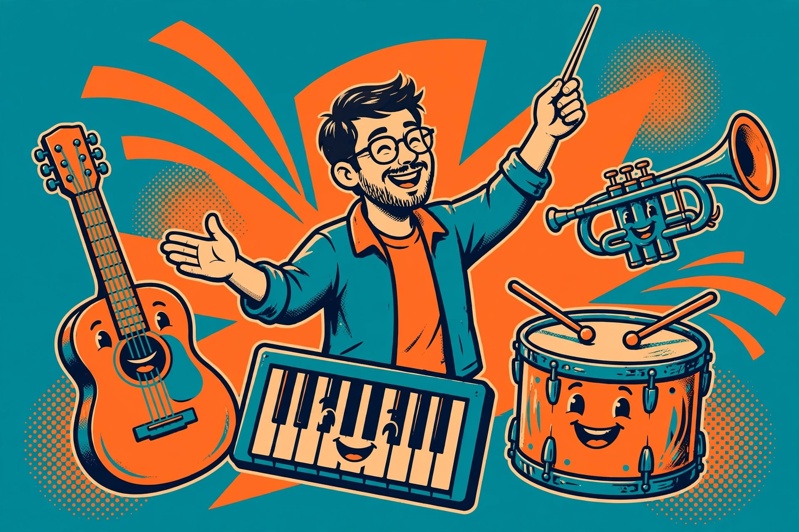

Music dad jokes that strike the right note

Music hands the dad-joke teller a ready-made orchestra of double meanings. Merriam-Webster defines a dad joke as a wholesome joke of the type said to be told by fathers, with a punchline that is often an obvious or predictable pun or play on words. Music vocabulary is built for exactly that: a note is a sound and a message, a bar is music and a counter, a flat is a note and an apartment, and a band can play a concert or hold your trousers up. This collection is organized by instrument family and by band life, so a joke can be matched to the learner at the piano, the drummer in the garage, or the listener who only ever plays the radio.
The sincere part: a joke from this page is a small, clean reset for the day it lands in. Tell one, let the groan happen, and leave the rest of the set for another day — scarcity is what keeps the groan affectionate.
Why music words pun so well
A pun, in the standard definition, exploits multiple meanings of a term, or similar-sounding words, for humorous effect. Music terms are unusually generous with both. Many are ordinary words borrowed long ago — key, note, rest, bridge, chorus, sharp, flat, natural — and each one kept its everyday meaning as a souvenir. The punchline is simply the souvenir being handed back.
Two definitions unlock most of the jokes below, and both are worth saying plainly. A scale, as a music-theory primer puts it, is a sequence of notes that provides the raw material for a piece of music. A chord, in the same basic terms, is generally a three-note grouping made by stacking alternate notes from the scale — notes played together instead of one after another. Hold those two pictures — a staircase of notes, and a stack of notes — and the jokes about climbing, stacking, and striking chords explain themselves as they go.
The sections below start with strings, move through keys and brass, give the drums and the whole band their turn, and finish with singing and listening — the section for readers who play nothing at all. The comparison table sorts the formats by how much music a listener needs to know, and the framework after it turns that into a picking rule for practice rooms, recitals, and car rides.
String instrument jokes
- Guitar apologize to the amplifier? It said its feedback had come out louder than intended.
- Violin feel nervous before the recital? It was a little highly strung about the whole evening.
- Cello give the best hugs in the orchestra? It had the warmest tone and the longest arms for it.
- Harp stay so relaxed at parties? It knew how to pluck up courage and let tension go.
- Banjo arrive at the picnic so cheerful? It had been picking at good things all morning.
- Bass guitar feel underappreciated on stage? Everyone noticed it only when it stopped playing.
- Ukulele compliment the guitar? It said big sound was not about size, and meant it.
- Fiddle refuse to argue with the bow? It did not want to be played against itself.
- Mandolin join the salad course? It heard there would be a lot of fine chopping involved.
- Old guitar string retire gracefully? It had been wound up for years and finally let itself rest.
Piano, keys, and brass jokes
- Piano apologize to the bench? It said it had been putting too much weight on the relationship.
- Trumpet feel confident before the parade? It had a brass neck and was not afraid to use it.
- Tuba get invited to every picnic? It brought the deepest notes and carried them proudly.
- Organ feel at home in the old hall? Every pipe there already knew its voice.
- French horn take the scenic route home? It preferred a road with plenty of twists in it.
- Piano key apply for a promotion? It wanted to move up from minor duties to major ones.
- Trombone extend its greetings so far? Sliding into conversation was its whole technique.
- Clarinet join the reed band down by the river? It felt it belonged among its own kind.
- Accordion stay cheerful under pressure? It had learned to breathe through being squeezed.
- Metronome get praised by the teacher? It never lost its composure, not even for a beat.
Drums and band life jokes
- Drum kit feel exhausted after the concert? It had been beaten all night and still kept time.
- Cymbal apologize for interrupting? It said crashing in was, regrettably, its whole job.
- Band take their chairs away as a joke? Without a stand to sit on, the whole thing fell apart musically.
- Conductor wave at the audience mid-song? The orchestra took it as a cue and waved back in time.
- Snare drum feel tense before the show? It was wound tight and trying to keep a crisp edge.
- Rehearsal run so long on Tuesday? The band kept finding new endings and refusing all of them.
- Tambourine feel left out of the melody? It shook with every feeling the song had left over.
- Road case for the drums complain? It carried the whole kit and never got a single solo.
- Last chair violinist stay optimistic? Every performance was a chance to move up one seat.
- Band's van get its own parking spot? It had carried the tour further than any member had.
Singing and listening jokes
- Choir robe feel important on Sunday? The whole performance hung on it looking composed.
- Radio dial feel dizzy in the car? Every passenger kept turning it toward a different station.
- Shower singer win a standing ovation? The audience was a row of shampoo bottles, and they stayed.
- Microphone feel shy at karaoke night? Everyone wanted to hold it close and tell it everything.
- Headphones break up the argument? They gave each side a channel of its own to cool down in.
- Vinyl record feel dizzy but happy? Going around in circles was how it played its best work.
- Lullaby get promoted in the household? It put the toughest audience to sleep, nightly.
- Whistler in the kitchen feel cheerful? The tune carried itself; he just provided the breath.
- Playlist apologize for repeating a song? It said some favourites deserved an encore, even alone.
- Applause arrive a second too early? It could not wait to get its hands together for the ending.
Joke formats compared
Music jokes divide cleanly by how much music the listener needs to know. This comparison table — built from the jokes in this article — sorts the formats used above.
| Format | How it works | Example from this page | Best for |
|---|---|---|---|
| Everyday-word pun | An ordinary word that music borrowed is handed back | The flat that is also an apartment; the note that is also a message | No musical knowledge; the safest opener for anyone |
| Instrument personified | An instrument is given a mood, a job worry, or a compliment | The highly strung violin before the recital | Listeners who can picture the instrument, players most of all |
| Stack-and-stair wordplay | The punchline uses how notes are arranged — scales climb, chords stack | Striking a chord built from stacked notes | Learners who have met scales and chords in lessons |
| Band-life scene | A whole rehearsal or concert scene is read literally | The band that falls apart when its chairs are taken | Anyone who has sat through a rehearsal, recital, or school concert |
The practical lesson of the table: start any mixed audience with an everyday-word pun, because it asks for nothing. Save stack-and-stair wordplay for the learner who just met the idea in a lesson — for that listener, catching the joke is proof the lesson stuck, and the groan comes with a small, real pride in it.
Picking the right music joke for the listener
Use this decision framework before deploying a joke. Three questions, in order:
- Does the listener play, learn, or only listen? A player gets the instrument-personified joke for their own instrument first — it is the one they will retell at rehearsal. A learner gets stack-and-stair wordplay tied to this week's lesson. A pure listener gets singing-and-listening jokes and everyday-word puns, which ask for no instrument at all.
- What is the musical moment? A practice slump needs a kind, short joke about the instrument, never about talent. Recital day needs the band-life scenes, told beforehand, not in the hush before walking on. A car ride can carry the longer setups, and a singalong can survive one joke per song, no more.
- What reaction is wanted? A groan means a predictable pun delivered flat. A genuine laugh usually needs the format one step above expectation: a scene joke for the parent who has sat through forty recitals, an everyday-word pun saved for the exact moment the word appears in real life.
Applied together: a nine-year-old in her first piano term gets the piano key's promotion and the metronome's composure. A garage-band teenager gets the cymbal's apology and the bass guitar's complaint. A grandparent who plays only the radio gets the dial, the vinyl record, and the lullaby — and retells the lullaby at bedtime, which is the framework working at full volume.
How to deliver a music joke
- Name the instrument, the music word, or the scene in one plain sentence before the joke starts.
- Ask the setup slowly, then pause a full beat before the punchline — timing is a musical skill, so use it.
- Say the punchline flatly, without laughing first — the deadpan is what makes it a dad joke.
- If it lands silently, unpack the double meaning in one line; for a learner, connect it to the scale or chord from this week's lesson.
- Stop at one or two per occasion. Even the best set list needs a rest between numbers, and a rest, in music, is a measured silence — not an ending.
What success looks like: a groan, an eye-roll, or — the highest honour — the listener retelling the same joke later as if it were their own discovery.
FAQ
Do these jokes work for someone who plays no instrument? Yes — that is what the singing-and-listening section and the everyday-word puns are for. The comparison table marks which formats need no musical knowledge at all, and they are the majority of the punchlines here: notes, keys, flats and rests are ordinary words first and music words second.
What do scale and chord mean in the jokes that use them? A scale is a sequence of notes that provides the raw material for a piece of music; a chord is generally a three-note grouping made by stacking alternate notes from that scale. A joke about climbing a scale is using the staircase picture; a joke about striking a chord is using the stack.
Where does the term dad joke come from? Merriam-Webster records the first known use of the term in 1987, and defines it as a wholesome joke with an obvious or predictable pun, judged endearingly corny.
Can a listener make up new ones? Music may be the easiest category of all. Pick a music word with an everyday twin — note, key, rest, bar, bridge, flat, sharp — state a tiny scene, and let the second meaning be the punchline. The framework above is the recipe.
← Back: Work and office dad jokes · Next: classic dad jokes →